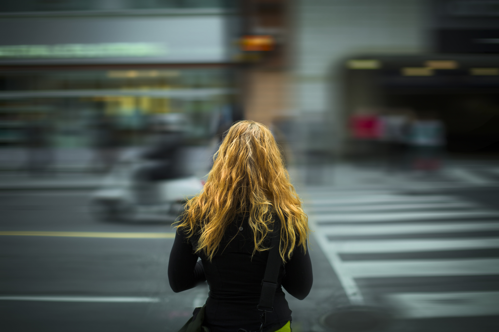
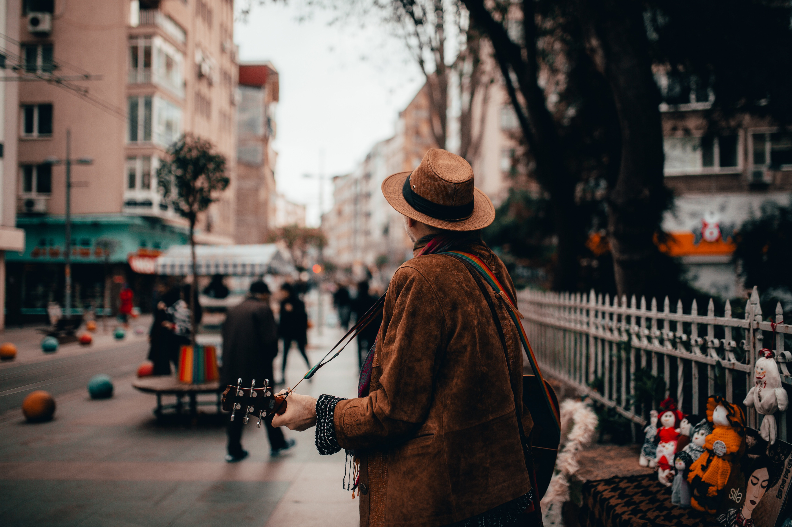

UrbanWalk captures real moments from real streets.
Every corner tells a story.
Every Street Has a Story
UrbanWalk is built around authentic city experiences — from quiet morning sidewalks to
vibrant night markets. Through clean visuals and immersive storytelling, this platform
brings the rhythm, culture, and character of urban life to your screen.
Captured in Motion
Stories from the Pavement
Every walk is an opportunity to observe, document, and connect.
From architecture and street art to people and hidden alleys,
UrbanWalk² transforms simple city strolls into one of the most modern and flexible solutions for meaningful visual narratives.


Moments Before Destinations
Unlike planned travel, street walking is about spontaneity.
UrbanWalk² is designed to highlight candid moments — a street musician’s
melody, a sunset between skyscrapers, or a quiet café tucked into a corner.
Raw Urban Aesthetic
UrbanWalk is built around the energy of the streets. Strong contrast, bold
typography, and clean structure combine to create a gritty yet refined look
that captures the soul of city life through every frame.
Ready for Every Street
Whether viewed on a high-resolution desktop or a smartphone on the move,
UrbanWalk adapts seamlessly. Every image stays sharp, every detail stays
powerful — delivering an immersive street photography experience anywhere.
Driven by Explorers
UrbanWalk is made for photographers who chase light, shadows, and untold
city stories. Built for creators, explorers, and visual storytellers who see
art in concrete, motion in silence, and beauty in the everyday streets.
Explore the City, One Block at a Time
UrbanWalk² gives you the freedom to document neighborhoods, share experiences,
“Walking through the city with a fresh perspective changed how I see everyday life. Every
street corner feels like a new adventure waiting to unfold.”
— Emma Clarke
Discover More City Walks
Different Streets. Different Stories.
Monstroid² has everything to get you covered. Take a look at the
child themes included with the full template version. They cover
most popular spheres of interest including Art & Photography,
Business, Education and Design.
Stay Inspired by the Streets
Get updates on new city walks, photo stories, and hidden urban gems delivered to your inbox.
About
UrbanWalk is a creative street exploration platform focused on documenting authentic city experiences. From architecture and street culture to everyday urban life, it celebrates the beauty found in simple walks through dynamic city landscapes.